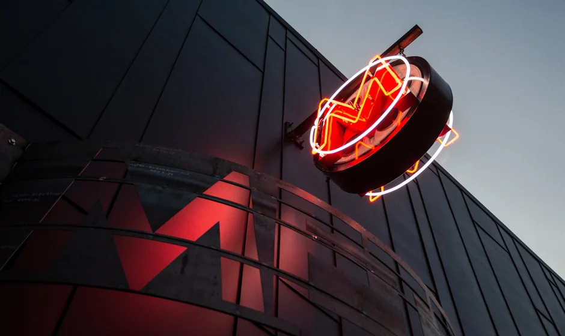

Education
North Eugene High School Eugene, OR (September 2020 - June 2023)
- Graduated (3.9 GPA)
- North Scholar
- Highest achievement offered, equivalent to valedictorian
- Highlander Service Award
- Served over 120+ hours of community service
- Honors diploma
- AVID (Advancement Via Individual Determination)
- College and post high school preparatory classes
Pennsylvania State University Behrend Erie, PA (August 2023 - Present)
- Undergraduate
- Intended major of Communication
Experience
Metro Cinema Eugene, OR (August 2020 - December 2022)
- 200+ hours of data entry
- Accountability, efficiency, dedication
Very Little Theater Eugene, OR (August - March 2020)
- Usher
- Leadership, quick-thinking, attentive
Positive Community Kitchen Eugene, OR (July - September 2020)
- Line cook
- Communication, team building, responsible
Skills
Google Drive
- Doc, slides, sheets
- Many years developing my drive skills because of school
Gimp
- Image editor
- Self-taught photo editor
Photoshop/Premiere Pro
- Photo and video editing
- Working to change dimensions of movie posters and editing short films

The sign for Metro Cinema